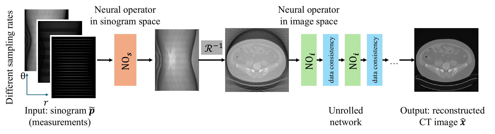
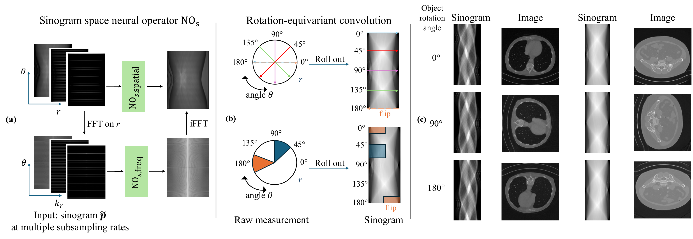
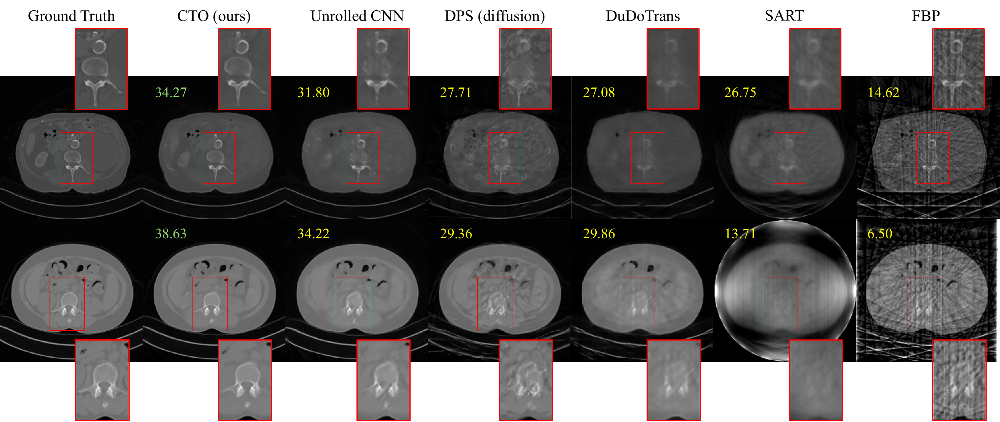
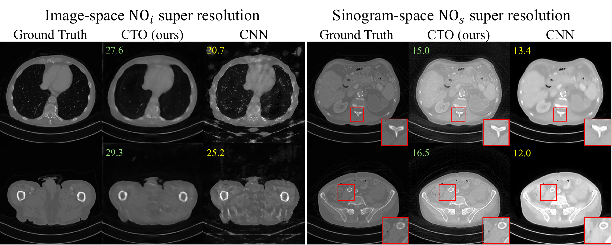

Sparse-view Computed Tomography (CT) reconstructs images from a limited number of X-ray projections to reduce radiation and scanning time, which is an ill-posed inverse problem. Existing methods achieve high-fidelity reconstructions but overfit to a fixed acquisition setup, failing to generalize well across sampling rates. For example, convolutional neural networks (CNNs) use the same kernels across resolutions, leading to artifacts when data resolution changes. This is a critical limitation in clinical practice, where acquisition sampling settings vary across organs and diagnostic protocols.
We propose Computed Tomography neural Operator (CTO), the first neural operator (NO) framework for CT reconstruction. CTO extends learning from fixed discretized grids to continuous function space, enabling a single model to generalize across measurement sampling rates without retraining. We also propose new NO architectural designs for CT: (i) a dual-domain NO architecture in both sinogram and image spaces, capturing complementary spatial–frequency information, and (ii) rotation-equivariant DIScrete–COntinuous convolutions (DISCO) that exploit the rotational structure inherent in tomographic acquisition. Empirically, CTO outperforms CNNs (> 3.4dB PSNR gain) and other baselines in multi-resolution settings across multiple CT datasets. Compared to state-of-the-art diffusion methods, CTO has 500× faster inference with an average 3dB gain. CTO further demonstrates strong out-of-distribution robustness, maintaining gains under cross-dataset transfer and noisy sinogram conditions. Ablation studies also validate each design choice. CTO establishes neural operators as a principled and practical paradigm for flexible, discretization-agnostic CT reconstruction.
Computed Tomography (CT) reconstructs cross-sectional images of internal anatomy from X-ray projections acquired at multiple angles. The measured projection data — the sinogram — represents line integrals of the object's linear attenuation coefficient along different ray paths, modelled (for parallel-beam geometry) by the Radon transform. Reconstruction amounts to inverting that transform. In sparse-view CT, the number of projection angles is reduced to lower radiation dose or shorten scan time, and the inverse problem becomes ill-posed: direct inversion produces severe streaking artifacts, so regularisation or learned priors are required.
Deep learning has transformed sparse-view CT reconstruction, but existing methods are tied to a specific discretization. A model trained at one measurement sampling rate does not generalise to another, because convolutional kernels are defined on a fixed grid — the same kernel covers a different physical receptive field when the data resolution changes. The usual workaround is to train and maintain a separate model per sampling rate, which does not scale and still fails to transfer across image resolutions. This is a critical limitation in clinical practice, where acquisition sampling settings vary across organs, protocols, and diagnostic purposes.
We propose CTO (Computed Tomography neural Operator), a unified reconstruction framework built on Neural Operators (NOs), which learn mappings between infinite-dimensional function spaces rather than between fixed grids. A single CTO model works across measurement sampling rates and image resolutions without retraining. To the best of our knowledge, CTO is the first application of neural operators to sparse-view CT.
Our main contributions are:
The central novelty is a unified function-space formulation for sparse-view CT: instead of learning separate discrete models for each sampling rate, we learn a single continuous operator from which different discretizations can be sampled, enabling multi-rate reconstruction and cross-discretization consistency without retraining.
Figure 1: (a) CTO reconstructs CT images across different measurement sampling rates and resolutions, whereas existing methods are resolution-dependent and must be trained separately for each sampling rate. (b) CTO's basic building block is DISCO (discrete–continuous convolution), a convolution layer defined in function space. DISCO learns kernels in the infinite-dimensional function space and discretizes them to the input data resolution, ensuring a consistent receptive field across resolutions. (c) CTO consistently outperforms the CNN baseline across sampling rates on kidney CT, at similar model size.
CTO is an end-to-end model following an unrolled network design. The input sinogram $\mathbf{p}$ is first processed by a sinogram-space neural operator $\mathrm{NO}_s$, which performs function-space learning that unifies different sampling rates along the view-angle axis $\theta$. The intermediate result is then fed to an unrolled network with 3 cascades, each consisting of an image-space neural operator $\mathrm{NO}_i$ and a data-consistency (physical update) term, which together denoise and reconstruct the final image.
Both operators are built on Discrete–Continuous (DISCO) convolutions, which parametrize kernels in continuous function space and discretize them to match the input or output resolution — making the whole framework inherently resolution-agnostic. DISCO is discretization-convergent: the approximation error is bounded across resolutions and converges to zero as resolution increases.

Figure 2: CTO architecture overview. The input sinogram is first fed to the neural operator $\mathrm{NO}_s$ defined in sinogram space, making CTO resolution-agnostic to different sinogram sampling rates. Unrolled cascades then mimic a classical iterative algorithm, each consisting of the image-space operator $\mathrm{NO}_i$ and a data-consistency term. Both are defined in function space, making CTO discretization-agnostic to sampling rates and image resolutions. $\mathcal{R}^{-1}$ denotes the inverse Radon transform.
$\mathrm{NO}_s$ acts on the function space of $\mathbf{p}(\theta, r)$, with detector position $r$ and view angle $\theta$ as the two sinogram axes. DISCO convolutions are applied directly in this $(\theta, r)$ coordinate system — without reparameterizing to $(x, y)$ — so the model learns in the intrinsic measurement domain and avoids projection error. Because the sinogram's local support corresponds, by Radon duality, to direction-selective global support in image space, $\mathrm{NO}_s$ learns global structural information, complementing the local detail captured by $\mathrm{NO}_i$.
Joint spatial–frequency learning. $\mathrm{NO}_s$ comprises two parallel U-shaped DISCO branches. $\mathrm{NO}_{s,\text{spatial}}$ operates on $\mathbf{p}(\theta, r)$ to capture local, geometry-aware correlations. $\mathrm{NO}_{s,\text{freq}}$ operates on the sinogram's frequency representation, obtained by a 1D Fourier transform along the detector axis, to model long-range angular–radial dependencies; the outputs are averaged. This is motivated by the Fourier slice theorem,
$\mathcal{F}_r\{\mathbf{p}(\theta, r)\}(\omega) = \hat{f}(\omega\cos\theta, \omega\sin\theta),$
which says the 1D Fourier transform of the sinogram along $r$ encodes the object's frequency spectrum in polar coordinates — so localized operations there correspond to global modifications of the reconstructed image. It is also a data-driven generalisation of filtered back projection (FBP): rather than imposing a hand-crafted ramp filter, $\mathrm{NO}_{s,\text{freq}}$ learns a frequency-domain prior directly from data.
Rotation equivariance. Parallel-beam CT induces two symmetries on the sinogram: rotating the image by $\phi$ is a shift in view angle, $(\mathbf{p} \circ R_\phi)(\theta, r) = \mathbf{p}(\theta - \phi, r)$; and $\mathbf{p}(\theta + \pi, r) = \mathbf{p}(\theta, -r)$ — the $\pi$-periodicity-with-flip identity. We honour both with a modified circular padding along $\theta$ that first flips the boundary data along the detector axis $r$ and then wraps it around $\theta$ (standard reflective padding is used along $r$). This provides physically consistent boundary conditions, preventing discontinuities at $\theta = 0^\circ$ and $180^\circ$, and aligns the network's inductive bias with the sinogram's geometry.

Figure 3: (a) Sinogram-space neural operator $\mathrm{NO}_s$. The subsampled sinogram is processed by two complementary operators — $\mathrm{NO}_{s,\text{spatial}}$ in the spatial domain and $\mathrm{NO}_{s,\text{freq}}$ in the frequency domain via a 1D Fourier transform along the detector axis $r$. Their outputs are combined and passed to the image-space stage. (b) Rotation-equivariant learning. Object rotation corresponds to a shift along the angular axis $\theta$; circular padding along $\theta$ preserves this rotational structure, with the angle flipping at $180^\circ$. (c) Rotating the object by $0^\circ$, $90^\circ$ and $180^\circ$ rotates the reconstruction consistently, confirming stable performance across orientations.
$\mathrm{NO}_i$ is a U-shaped DISCO network operating in the spatial domain of image space, which lets it train and infer at different image resolutions. It refines and denoises the intermediate reconstruction from $\mathrm{NO}_s$, recovering high-frequency local information and fine structural detail, so that final reconstructions preserve both large-scale structural consistency and small-scale detail.
We evaluate on the AAPM Low-Dose Abdominal CT dataset and the C4KC-KiTS Kidney CT dataset, at 9-, 18-, 36- and 72-view acquisition settings. For all methods a single model is trained across all sampling rates, with the rate chosen uniformly at random per batch, so every method sees the same amount of data at each rate. We report RMSE after conversion to Hounsfield Units (clinical accuracy) alongside PSNR and SSIM in the original reconstruction space (image similarity).
CTO outperforms learning-free methods, diffusion methods, and CNN and transformer architectures. Averaged over view counts, CTO is 3 dB PSNR better than the unrolled CNN baseline, 6 dB better than DPS, and 6 dB better than DuDoTrans on the abdomen dataset; on the kidney dataset the corresponding gains are 4 dB, 3 dB and 5 dB. Note that some baselines score below their published numbers — expected, since those works train a separate model per sampling rate.
| Category | Method | RMSE (HU) $\downarrow$ | PSNR $\uparrow$ | SSIM ($\times 10^{-2}$) $\uparrow$ |
|---|---|---|---|---|
| Learning-free | FBP | 632.58 | 13.14 | 33.87 |
| Learning-free | SART | 161.91 | 24.97 | 59.51 |
| Diffusion | DPS | 149.97 | 25.68 | 60.08 |
| Diffusion | ALD | 148.13 | 25.78 | 63.42 |
| Single pass | DuDoTrans | 154.64 | 25.36 | 69.52 |
| Single pass | GloReDi | 96.89 | 29.47 | 78.52 |
| Single pass | MDPRNet | 151.78 | 25.38 | 73.05 |
| Unrolled | Learned PD | 155.14 | 25.35 | 50.21 |
| Unrolled | LEARN | 153.39 | 25.51 | 73.42 |
| Unrolled | RegFormer | 150.57 | 25.67 | 72.95 |
| Unrolled | Unrolled CNN | 100.65 | 29.14 | 78.21 |
| Unrolled | CTO (ours) | 75.97 | 31.57 | 81.62 |
Table 1: 18-view sparse-view CT reconstruction on the AAPM dataset. Lower is better for RMSE, higher for PSNR/SSIM. All learning methods are a single model trained jointly on $N_v = \{9, 18, 36, 72\}$ views. Full results at 36 and 72 views, with standard deviations, are in the paper.

Figure 4: Reconstruction at the 18-view sampling rate on the AAPM abdomen dataset (top row) and the Kidney dataset (bottom row). CTO outperforms baselines on both PSNR (upper left of each panel) and visual reconstruction quality.
Because CTO's kernels are defined as continuous functions, they maintain the same relative receptive field when the discretization changes — a CNN's fixed-size kernel covers half the relative field when resolution doubles. We test this without any fine-tuning.
Image domain ($\mathrm{NO}_i$). All models are trained to produce $256 \times 256$ reconstructions from 18-view sinograms; at inference the intermediate output is bilinearly upsampled to $512 \times 512$ before image-space processing. CTO gains 3 dB PSNR over the CNN baseline and 4.8 dB over LEARN. The CNN baseline shows substantial blurring and aliasing at the higher resolution, while CTO preserves much sharper detail.
Sinogram domain ($\mathrm{NO}_s$). Models are trained on sinograms with 72 views and 672 detectors, then evaluated at larger sinogram sizes. At 144 views / 672 detectors, CTO outperforms the unrolled CNN by 3.5 dB, LEARN by 3.2 dB and RegFormer by 2.8 dB; at 144 views / 1344 detectors, by 3.7 dB, 2.7 dB and 2.4 dB respectively.

Figure 5: Zero-shot super-resolution. CTO outperforms the CNN baseline for both $\mathrm{NO}_i$ and $\mathrm{NO}_s$ super-resolution, preserving fine anatomical structure with fewer artifacts.
Overfitting to a single rate. A model trained only at 72 views collapses when tested elsewhere: LEARN reaches 32.32 dB at 72 views but 4.16 dB at 18 views, and RegFormer 35.11 dB versus 5.04 dB. Multi-rate co-training mitigates this (LEARN 25.51 / 27.53 / 29.90 dB and RegFormer 25.67 / 28.00 / 30.43 dB at 18 / 36 / 72 views), but CTO remains well ahead at 31.57 / 35.06 / 37.88 dB.
Inference cost. On an NVIDIA A100, CTO runs in 0.065 s per reconstruction with no per-rate tuning, against 51.58 s for DPS and 32.72 s for ALD — over $500\times$ faster than diffusion, which additionally requires hyperparameter tuning for each sampling pattern. SART (0.417 s) also needs per-rate tuning.
Component ablations. Averaged over view counts, removing $\mathrm{NO}_i$ costs 3.86 dB PSNR and removing $\mathrm{NO}_s$ costs 4.82 dB. Within $\mathrm{NO}_s$, removing the spatial branch costs 3.1 dB and the frequency branch 2.7 dB. The rotation-equivariant circular padding is worth 0.83 dB at 24-view subsampling (33.00 dB with, 32.17 dB without).
We present CTO, a unified neural-operator framework for sparse-view CT reconstruction that generalises across sampling rates of the sensory data, overcoming the limitation of existing deep learning methods that are tied to a fixed acquisition setting. By combining rotation-equivariant DISCO convolutions with joint spatial–frequency learning in the sinogram domain, CTO achieves robust, resolution-agnostic reconstructions and consistently outperforms state-of-the-art methods across downsampling regimes — a scalable and flexible alternative to traditional CT reconstruction.
Future work could extend CTO to more clinically relevant datasets, to 3D CT and other computational imaging tasks, add uncertainty analysis, and evaluate clinical applicability across broader scanner protocols.
This work is supported in part by ONR (MURI grant N000142312654 and N000142012786). A.D. is supported in part by the Summer Undergraduate Research Fellowships (SURF) at Caltech. J.W. is supported in part by the Pritzker AI+Science initiative and Schmidt Sciences. A.A. is supported in part by the Bren endowed chair and the AI2050 senior fellow program at Schmidt Sciences.
@inproceedings{datta2026cto,
title={Resolution-Agnostic Neural Operators for Multi-Rate Sparse-View CT},
author={Datta, Aujasvit and Wang, Jiayun and Aali, Asad and Anandkumar, Anima},
booktitle={European Conference on Computer Vision (ECCV)},
year={2026}
}